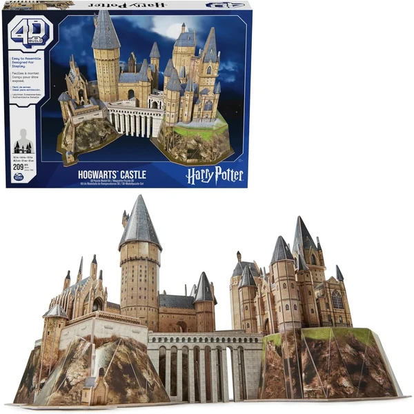
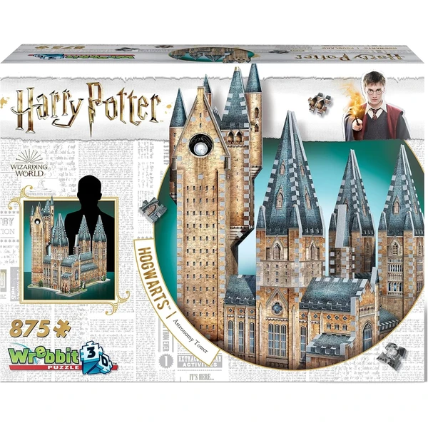

✨ Guía especial
Puzzle 3D de Harry Potter: el Castillo de Hogwarts y toda la colección
El modelo estrella, otros escenarios y qué marca elegir
El modelo estrella, otros escenarios y qué marca elegir
Si hay un puzzle 3D con nombre propio dentro del mundo de las licencias, es sin duda el Castillo de Hogwarts. La réplica en miniatura de la escuela de magia más famosa del cine concentra, ella sola, la inmensa mayoría del interés relacionado con Harry Potter en formato tridimensional — muy por delante de cualquier otro escenario de la saga.
En esta guía te contamos qué opciones existen del Castillo de Hogwarts según tamaño y marca, qué otros escenarios de Harry Potter puedes encontrar en 3D, y dónde comprarlo, tanto online como en tienda física.
El Castillo de Hogwarts es, con diferencia, el puzzle 3D más popular de toda la licencia de Harry Potter. Recrea la fachada y las torres principales del castillo tal como aparece en las películas, con un nivel de detalle que varía bastante según el número de piezas de cada versión: desde modelos más compactos y accesibles hasta réplicas grandes de varios cientos de piezas pensadas para un montaje de varias horas.
La marca de referencia aquí es Ravensburger, que tiene la licencia oficial y ofrece el acabado más detallado, aunque también existen versiones de CubicFun y de marcas menos conocidas a un precio más ajustado. A la hora de elegir, conviene fijarse en dos cosas antes que en el precio: el número de piezas (a más piezas, mayor dificultad y tamaño final) y si incluye luz LED, un extra bastante habitual en este modelo concreto que ilumina las ventanas del castillo una vez montado.

Castillo Hogwarts Ver en Amazon →Más allá del Castillo de Hogwarts, existen versiones en 3D de otros escenarios reconocibles de la saga, aunque mucho menos habituales de forma individual:
El Callejón Diagon, la calle comercial mágica donde los estudiantes compran el material escolar.
El Autobús Noctámbulo, el autobús de tres pisos que aparece en la tercera película.
La Madriguera, la casa de la familia Weasley.
El tren de Hogwarts, réplica del Expreso de Hogwarts.
La Torre de Astronomía, uno de los escenarios más reconocibles del propio castillo.
Son mucho menos habituales que el Castillo de Hogwarts, pero es común que quien ya lo tiene busque completar la colección con alguno de estos modelos adicionales.

Torre Astronomia Ver en Amazon →No todas las versiones del puzzle 3D de Harry Potter están fabricadas por la misma marca, y la diferencia de acabado y precio entre ellas es considerable.
Ravensburger es la opción de referencia: tiene la licencia oficial de Harry Potter, el mayor detalle en el acabado y suele ser la primera que aparece en las búsquedas. Es también la más cara del grupo, pero la que mejor sostiene el resultado final a la vista, sobre todo en las versiones con más piezas.
CubicFun ofrece una alternativa más económica, con calidad de montaje algo inferior pero suficiente para quien busca el producto sin pagar el sobrecoste de la licencia oficial.
Wrebbit aporta su formato característico de pieza grande tipo "Puzz-3D", más cercano al puzzle tradicional en cuanto a tamaño de pieza — una opción distinta si se busca algo menos minucioso que el resto.
Lego, aunque no es estrictamente un "puzzle 3D" en el sentido de piezas que encajan por presión sin instrucciones paso a paso, es habitual encontrarlo asociado al Castillo de Hogwarts por quienes buscan una alternativa de construcción con la misma temática — vale la pena mencionarlo, aunque dejando claro que es un producto de naturaleza distinta.
El Castillo de Hogwarts y el resto de escenarios de la saga se encuentran principalmente en Amazon, donde además suele haber más variedad de versiones (distinto número de piezas, con o sin luz LED) que en tienda física.
También puedes encontrarlo en tiendas físicas como Carrefour, Juguettos o Toys R Us, especialmente en campaña de Navidad o vuelta al cole, aunque el stock y las versiones disponibles varían bastante según la tienda y la temporada — si buscas un modelo concreto con seguridad de encontrarlo, Amazon suele ser la opción más fiable durante todo el año.
Varía según la versión: existen modelos más compactos de menos piezas y montaje más rápido, y réplicas grandes de varios cientos de piezas pensadas para un montaje de varias horas. Antes de comprar, conviene fijarse en el número exacto de piezas que indica cada ficha de producto, ya que influye directamente en el tamaño final de la maqueta.
No todas las versiones la incluyen — es un extra habitual, sobre todo en las versiones de mayor tamaño, que ilumina las ventanas del castillo una vez montado. Si es importante para ti, comprueba que la ficha del producto lo menciona explícitamente antes de comprar.
Ravensburger tiene la licencia oficial y el acabado más detallado, pero es más cara. CubicFun ofrece una alternativa más económica con calidad de montaje algo inferior, suficiente para quien no necesita el detalle premium de la versión oficial.
Principalmente en Amazon, donde hay más variedad de versiones disponibles todo el año. También se encuentra en tiendas físicas como Carrefour o Juguettos, aunque el stock varía según la campaña.
Todos los tipos, materiales, marcas y modelos según la edad.